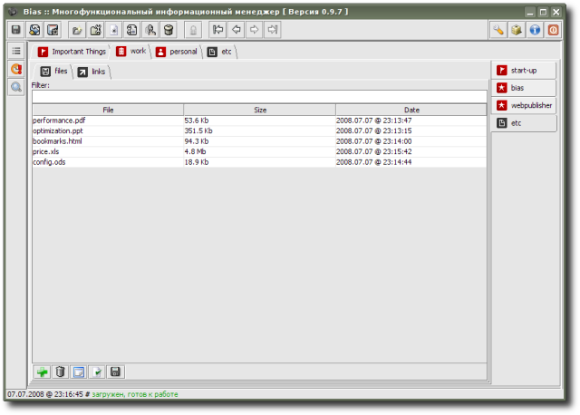

FilePack - allows to organize and store pack of files; besides of storing, files can be viewed/edited (initially, file is open for viewing in standard system viewer/editor; if any changes were made to file, edited version can be placed back to organizer by clicking on "apply changes" button); if user would like to keep some important documents with him, but they still have to be protected from unauthorized access (even if USB-Flash drive they are stored on is lost), this extension is what user needs (file is decrypted when opened for viewing, and if there were some changes, new version of the file is encrypted and replaces old one in organizer; for user, though, this process is "transparent" and he just works with files as usually - view/edit/save; the only disadvantage - if file was open and changed, besides usual save procedure in system editor, user should not forgot about "apply changes" button inside organizer, otherwise old version will be kept in it).
Extension is provided by R. Kasianenko, an author of Bias application.
Preview:
